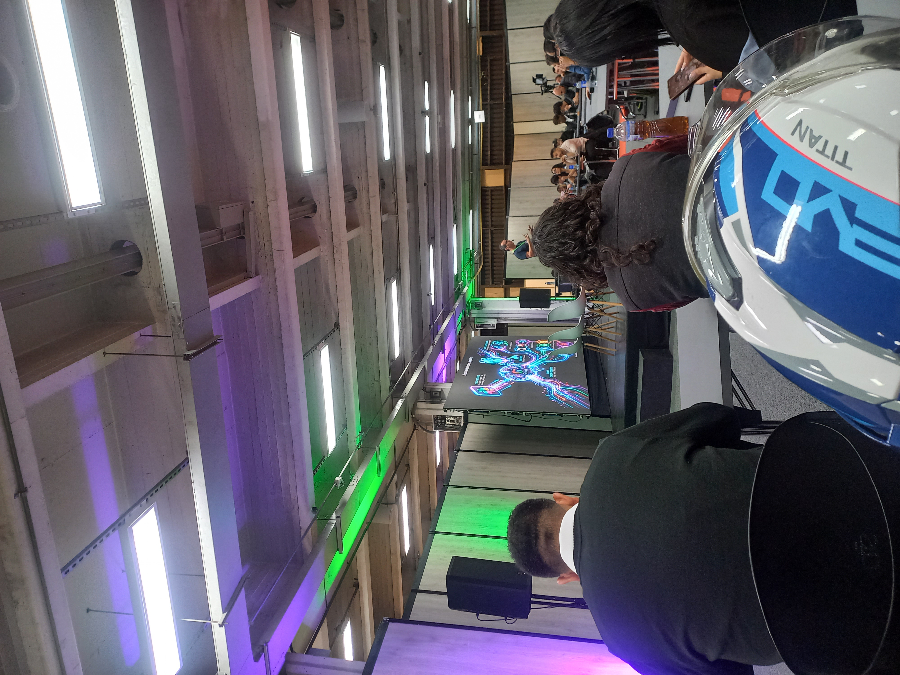
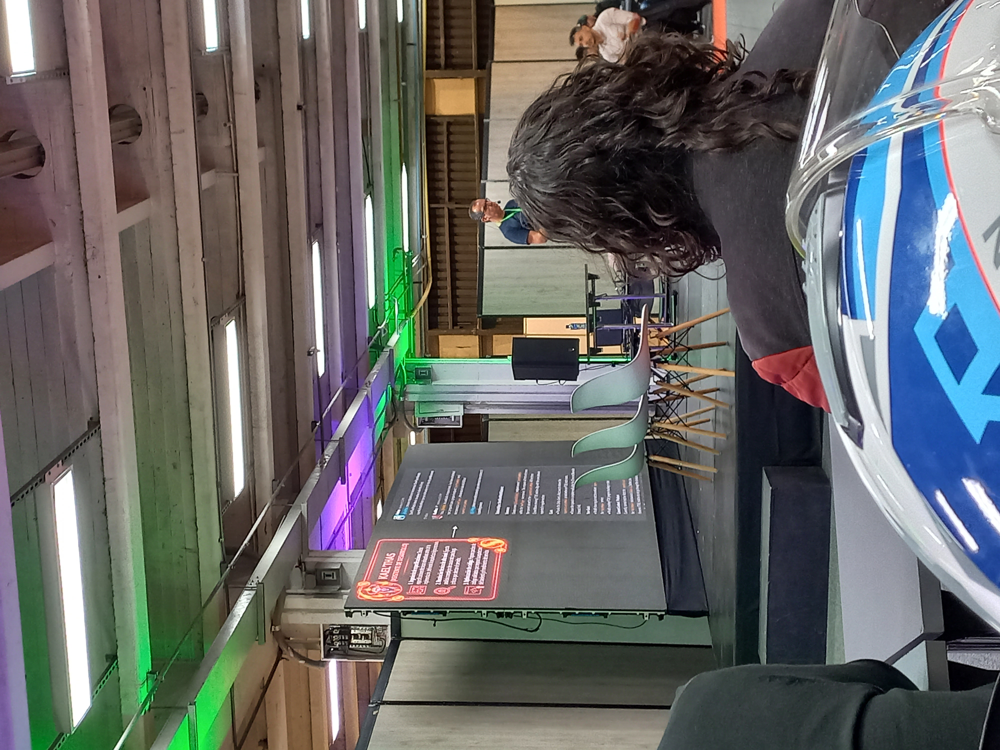
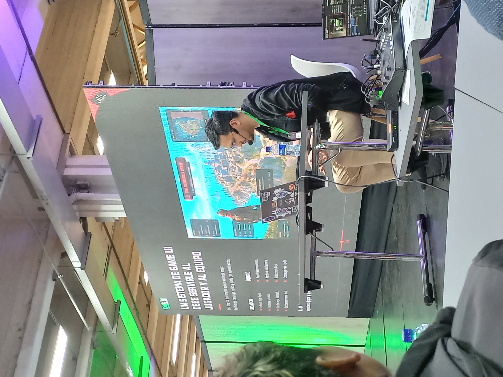
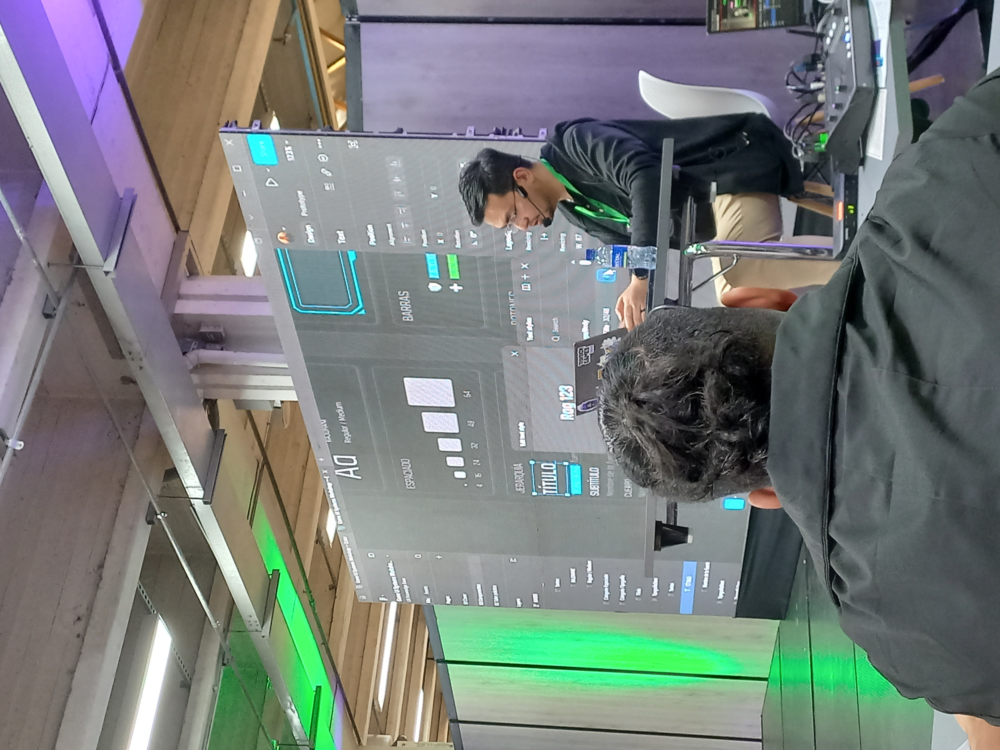

BIENVENIDO A COLOMBIA 5.0
El futuro de la tecnología ya está aquí.
¿De qué trata este sitio?
Hice esta página web pensando en: recopilar, desmenuzar y compartir todo lo que me dejó el evento Colombia 5.0. Desde mi perspectiva, y manejando tanto el español como el inglés, entraremos de lleno en lo que está pasando hoy con la programación, los sistemas de inteligencia artificial y la forma en que diseñamos interfaces. Al final, lo que busco es entender la gran responsabilidad que tenemos quienes creamos tecnología dentro del mundo empresarial actual.
// FUENTES Y SOPORTE DE DESARROLLO
- Información principal basada en las ponencias y memorias del evento presencial Colombia 5.0.
- Estructura de contenidos y traducción optimizada con el apoyo de la IA de Google Gemini y traductor de Google.
Metiendo IA en los procesos de desarrollo
Charla de: Alejandro González (CEO de Bacon Games)
El tema central
En esta sesión vimos a fondo cómo ha crecido Bacon Games y los pasos que han dado en la industria, hablando de hitos como cuando sacaron FIFA Rivals. La conversación se torno interesante cuando empezamos a analizar cómo las herramientas nuevas y la automatización están cambiando por completo la forma típica de trabajar en los estudios de videojuegos de todo el mundo.
Conceptos clave
Análisis y reflexiones de la charla
Escuchar a Alejandro González nos permite entender sobre cómo los videojuegos dejaron de hacerse puramente a mano para empezar a usar estructuras apoyadas en Inteligencia Artificial. Al repasar los inicios de Bacon Games y ver de cerca lo que hicieron con FIFA Rivals, vemos que automatizar las cosas con agentes de IA no tiene nada que ver con quitarle el puesto a la gente, sino con darles mejores superpoderes para trabajar.
Quitarse de encima el trabajo aburrido de picar código repetitivo, lidiar con los fallos en los repositorios, automatizar las pruebas de QA o armar los primeros bocetos de las mecánicas usando memorias lógicas ayuda mucho. Hace que los estudios pequeños puedan jugar en la misma liga que los gigantes de la industria. El verdadero truco está en que te permite ahorrar un tiempo valioso que luego puedes dedicarte a la creatividad y a los detalles que hacen único al juego.
Listening to Alejandro González allows us to understand how video games stopped being made purely by hand to start using structures supported by Artificial Intelligence. When reviewing the beginnings of Bacon Games and looking closely at what they did with FIFA Rivals, we see that automating things with AI agents has nothing to do with taking people's jobs, but rather with giving them better superpowers to work.
Getting rid of the boring work of grinding repetitive code, dealing with repository issues, automating QA testing, or building the first sketches of mechanics using logical memory helps a lot. It allows small studios to play in the same league as the industry giants. The real trick is that it saves you valuable time that you can then dedicate to creativity and the details that make the game unique.
Fotos del evento





// FUENTES Y SOPORTE DE DESARROLLO
- Contenido temático extraído de la conferencia dictada por Alejandro González (Bacon Games) en Colombia 5.0.
- Traducción técnica y localización idiomática realizada con la asistencia de Google Traductor y Gemini.
- Sintaxis y redacción de bloques analíticos refinados con el soporte de Gemini.
Interfaces de juegos que sí se entienden
Liderado por: Andrés Felipe Pisso Tobar (Lead UX en Teravision Games)
Que se trabajó?
Este taller fue muy práctico. Entramos a solucionar los problemas típicos que aparecen cuando diseñas la experiencia de un jugador, donde es facil terminar con pantallas llenas de desorden. La idea principal fue dejar de pensar solo en que las cosas se vean bonitas y empezar a armar estructuras lógicas usando lo que de verdad se maneja hoy en las empresas.
Herramientas y temas
Que aprendi?
El taller con Andrés Pisso me dejó clara una realidad: las interfaces en los juegos se vuelven un dolor de cabeza si no seguimos un orden estricto desde el principio. Mientras hacíamos los ejercicios directamente en Figma, entendi que diseñar no tiene nada que ver con poner adornos por todos lados o luces que llamen la atención. Se trata de lograr que cualquier persona pueda moverse por el juego de forma natural, sin complicaciones.
Aprender a usar bien los componentes reutilizables, cuidar la jerarquía de los textos y dominar el Auto Layout para controlar los espacios de forma exacta cambia por completo el juego. Estos trucos me sirven para conectar lo que tengo en mente como diseñador con lo que luego se va a picar en código o a meter en motores como Unity. Una interfaz está bien hecha cuando le facilita la vida al jugador en vez de atosigarlo con un montón de datos que no necesita.
The workshop with Andrés Pisso made one reality clear to me: game interfaces become a headache if we don't follow a strict order from the beginning. While doing the exercises directly in Figma, I understood that design has nothing to do with putting decorations everywhere or lights that catch the eye. It is about making sure that anyone can move through the game naturally, without complications.
Learning how to properly use reusable components, taking care of text hierarchy, and mastering Auto Layout to control spacing exactly changes everything. These tricks help me connect what I have in mind as a designer with what will actually be coded or thrown into engines like Unity later on. An interface is well done when it makes the player's life easier instead of crowding them with data they don't care about.
Capturas y muestras




// FUENTES Y SOPORTE DE DESARROLLO
- Basado en las metodologías y dinámicas del taller interactivo UI/UX liderado por Andrés Pisso (Teravision Games).
- Soporte idiomático estructurado a través de Google Traductor para el bloque en idioma inglés.
- Revisión conceptual y apoyo en el desarrollo lógico de la interfaz por la Inteligencia Artificial Gemini.
Diccionario técnico bilingüe
Una lista con los 30 términos de diseño y desarrollo que anoté durante Colombia 5.0.
| Palabra (Inglés) | Cómo se dice (Español) | Explicación sencilla |
|---|
// FUENTES Y SOPORTE DE DESARROLLO
- Términos recopilados en tiempo real durante los laboratorios y charlas de Colombia 5.0.
- Definiciones técnicas verificadas e investigadas mediante documentación oficial, documentación de Figma y otros.
- Traducciones y equivalencias idiomáticas validadas con Google Traductor y refinadas en colaboración con Gemini.
Cierre y lo que opino sobre la ética en las empresas
Mi punto de vista frente a lo que esta pasando en el mundo digital.
¿Cómo se vive la ética en el día a día de la tecnología?
Hablar de ética en el software empresarial no tiene nada que ver con seguir un manual de reglas por obligación. Es algo que debe estar metido en la raíz de cómo pensamos y estructuramos cualquier programa. Más ahora, que estamos rodeados de automatizaciones y que la Inteligencia Artificial se metió en casi todo lo que usamos.
El punto más crítico está en cómo cuidamos los datos que la gente nos confía cuando entra a nuestras aplicaciones. Nosotros, como desarrolladores, y las empresas para las que trabajamos, tenemos que ser transparentes con cómo funcionan los códigos por detrás. Tenemos que construir sistemas seguros de verdad para evitar que los algoritmos terminen discriminando o haciendo más grandes los problemas que ya tenemos en la sociedad.
Al final del día, sé bien que mi trabajo no se limita a escribir código limpio o montar páginas que aguanten miles de usuarios. Siento que debemos ser los que vigilen el impacto real de lo que creamos. La meta debe ser que la tecnología ayude a la gente a vivir mejor, de manera justa y pareja, buscando un equilibrio real entre el avance técnico y el respeto a las personas.
Talking about ethics in enterprise software has nothing to do with following a rulebook out of obligation. It is something that must be embedded in the very roots of how we think about and structure any program. Even more so now, when we are surrounded by automation and Artificial Intelligence has made its way into almost everything we use.
The most critical point is how we handle the personal data people trust us with when they log into our apps. As developers, along with the companies we work for, we need to be completely transparent about how things run behind the scenes. We have to build genuinely secure setups to prevent algorithms from turning biased or making existing social divides even worse.
At the end of the day, I know very well that my work isn't limited to writing clean code or building pages that can handle thousands of users. I feel that we must be the ones monitoring the real impact of what we create. The goal must be for technology to help people live better, in a fair and equal way, seeking a true balance between technical advancement and respect for people.
// FUENTES Y SOPORTE DE DESARROLLO
- Reflexión elaborada a partir del debate final sobre responsabilidad digital empresarial llevado a cabo en Colombia 5.0.
- Traducción e interconexión gramatical bilingüe estructurada con apoyo de Google Traductor.
- Optimización y revisión del planteamiento ético-filosófico desarrollado con asistencia de Gemini.